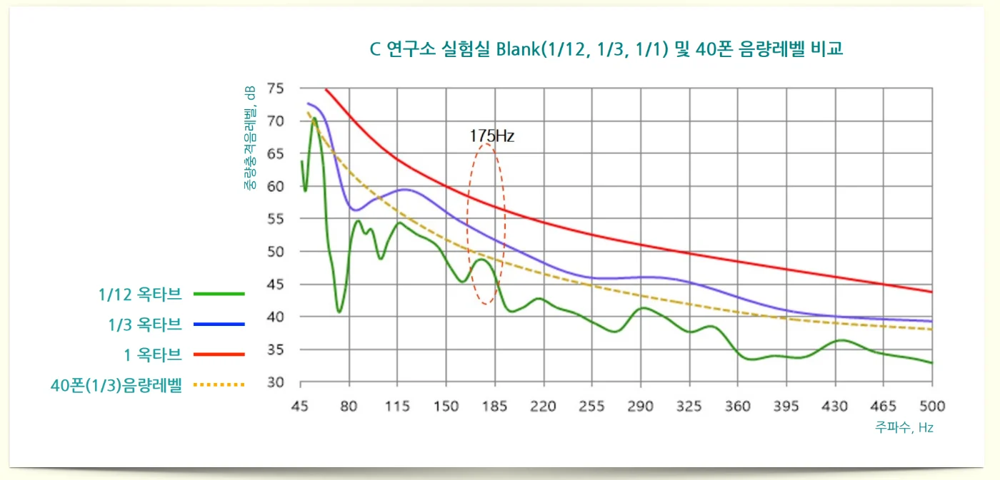
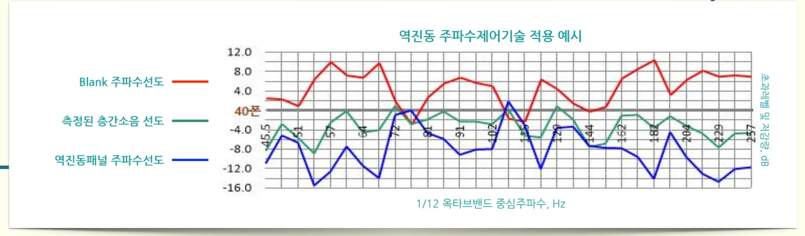

국가신기술(NET) 제1442호 · 기술 해설
주파수 제어 기술이란? 건물마다 다른 층간소음을 잡는 원리
다담솔루션의 주파수 제어 기술은 건물 맨바닥(Blank)의 고유진동을 1/12 옥타브밴드로 측정한 뒤, 미리 구축한 40개 패널 모델의 주파수별 중량충격음 저감량 데이터베이스에 대입해 그 건물의 피크 주파수와 반대 방향으로 진동하는(역진동) 패널 조합을 골라 시공하는 기술입니다. 아파트마다 고유진동이 달라 같은 바닥 구조로는 층간소음을 줄이기 어렵다는 문제를 해결하려고 개발했고, 2022년 9월 22일 산업통상자원부 신기술(NET) 인증 제1442호를 받았습니다.
- 측정 간격
- 1/12 옥타브밴드
- 패널 DB
- 40개 모델
- 평가 기준
- 40폰 (수면 지장 없는 수준)
- 핵심 특허
- 제10-2262286호
- NET 인증
- 제1442호 (2022.09.22)
왜 주파수 제어가 필요한가요?
- 건물마다 고유진동이 다릅니다. 고유진동이 다른 아파트에 같은 구조의 바닥을 시공하면 층간소음 저감 효과가 들쭉날쭉합니다.
- 완충재가 오히려 중량충격음을 키울 수 있습니다. 기존 습식온돌에서 단열재(완충재)를 넣으면 특정 주파수에서 중량충격음이 증폭되는 현상이 생깁니다.
- 기존 측정 방식으로는 원인 주파수를 찾을 수 없습니다. KS F 2863-1, 2는 1옥타브 간격으로 평가하기 때문에, 그 안에 숨은 피크 주파수(고유진동수)와 경계 주파수의 소음을 확인할 수 없습니다.
1/12 옥타브로 보면 무엇이 보이나요?

1옥타브나 1/3옥타브로 뭉뚱그려 측정하면 매끈한 곡선만 보이지만, 1/12 옥타브로 나누면 소음을 일으키는 특정 주파수의 봉우리가 드러납니다. 다담솔루션은 이를 계산하기 위해 KS C IEC 61672-1의 A주파수가중을 1/3·1/12 옥타브로 확장하는 산출식, KS I ISO 226 기반 40폰 동일음량레벨 산출식, 공명투과주파수 산출식, 방진구 성능 함수식을 직접 개발했습니다.
역진동 패널은 어떻게 고르나요?

건물 맨바닥이 특정 주파수에서 크게 울리면(빨간선 봉우리), 그 주파수에서 크게 깎아주는 패널(파란선 골짜기)을 고릅니다. 둘이 서로 상쇄되면서 시공 후 소음(초록선)이 40폰, 즉 잠자는 데 지장이 없는 수준 근처로 평평해집니다.
40개 패널 모델 데이터베이스
패널 구성 요소를 바꿔 가며 주파수별 중량충격음 저감량을 측정한 40개 모델의 데이터베이스를 구축했고, 평가 방법이 임팩트볼 A특성으로 바뀌는 것에 대비한 별도 DB도 만들었습니다.
| 재료 | 기본 모델 | 확장 모델 변수 |
|---|---|---|
| Mg보드 두께 | 12mm | 15mm, 18mm |
| Mg보드 비중 | 1.87 | 1.1 ~ 2.0 |
| 방진구 압축하중 | 230N | 200 ~ 300N |
| 방진구 높이 | 50mm | 40, 45, 50, 55, 60mm (형상 5종) |
| 흡음재 두께 | 20mm | 10, 20, 30, 40mm |
중량충격음에 영향을 주는 인자는 공명투과주파수, 패널 상판·하판의 두께와 면적중량, 방진구의 구조·스프링 상수·배치밀도, 흡음재 종류와 두께, 바닥의 공간 높이입니다.
현장 적용 절차 (4단계)
- 설치할 건물의 맨바닥(Blank) 중량충격음 레벨을 1/12 옥타브밴드로 측정합니다.
- 측정값을 DB에 입력하면, 모든 패널 모델을 설치했을 때 예상되는 중량충격음의 40폰 초과 레벨이 계산됩니다.
- 가장 좋은 모델을 설치하고 중량충격음 레벨과 동일음량 레벨 기준으로 층간소음을 평가합니다.
- Blank와 선정 패널의 저감 특성 그래프를 검토해 필요하면 추가 설계합니다. 대부분의 주파수에서 40폰 이하 성능을 확인했습니다.
기존 기술과 비교
| 구분 | 다담 주파수 제어 건식온돌 | 타사 건식 (코일스프링 방식) | 습식 (슬래브 증가) |
|---|---|---|---|
| 구조 | 모듈형 패널 | 모듈형 패널 | 모르타르 |
| 소음 저감 원리 | 소음원(피크음) 주파수 제어 | 방진 코일스프링 + 모르타르판(40mm) | 슬래브 두께 증가 (300mm) |
| 층간소음 성능 | 중량 1등급 · 경량 1등급 | 중량 4등급 · 경량 1등급 | 중량 2등급 · 경량 2등급 |
| 보수·교체 | 모듈 교체 | 모르타르판 철거 | 대량 폐기물, 구조비 과다 |
관련 특허
- 제10-2262286호 주파수제어기술을 적용한 건식온돌용 모듈형 패널 및 이를 이용한 공동주택의 중량바닥충격음레벨 최적화 방법: 건물의 고유진동 특성에 따라 중량바닥충격음 레벨을 최적화하는 방법
- 제10-2119407호 층간소음 저감용 고강성 방진구: 충격과 진동이 층간 구조체를 통해 다른 층으로 전달되지 않도록 막는 방진구
- 제10-2258997호 공동주택 바닥충격음 차단구조용 모듈형 건식온돌 및 그 시공방법
앞으로의 연구
건물의 고유진동 특성에 따른 패널 저감량 보정 기술, 건물 구조(벽식·라멘 등)에 따른 층간소음 주파수 특성화와 해소 기술을 연구하고 있습니다.
자주 묻는 질문
층간소음 주파수 제어 기술이란 무엇인가요?
왜 1/12 옥타브로 측정하나요?
40폰은 무슨 뜻인가요?
같은 바닥 구조인데 아파트마다 층간소음이 다른 이유는?
근거 자료
- 다담솔루션 신기술(NET) 설명자료 「건축물 Blank 진동특성을 고려한 층간소음 저감용 건식온돌패널 설계 및 제조기술」 (신기술 인증 제1442호 관련)
- 경향신문, 「다담솔루션 “층간소음 해결 신기술 인증 획득”」 (2022.10.05)
- 다담솔루션 기업설명자료(IR, 2022.08)